الجوانب الحسابية للانتشار الأمثل للشبكة الإستراتيجية
Abstract
غالبًا ما يتم تصميم الانتشار على الشبكات المعقدة على أنه عملية عشوائية. ومع ذلك، فإن العمل الأخير حول الانتشار الاستراتيجي يؤكد على قوة اتخاذ القرار للوكلاء [1] ويتعامل مع الانتشار باعتباره مشكلة استراتيجية. نحن هنا ندرس الجوانب الحسابية للنشر الاستراتيجي، أي، وإيجاد التسلسل الأمثل للعقد لتنشيط الشبكة في أقل وقت ممكن. لقد أثبتنا أن إيجاد الحل الأمثل لهذه المشكلة هو مكتملة NP في حالة عامة. للتغلب على هذه الصعوبة الحسابية، نقدم خوارزمية لحساب الحل الأمثل بناءً على تقنية البرمجة الديناميكية. نوضح أيضًا أن المشكلة ثابتة ويمكن تتبعها عند تحديد معلماتها بواسطة منتج عرض الشجرة والحد الأقصى للدرجة. نحن نحلل إمكانية تطوير خوارزمية تقريبية فعالة ونظهر أن الخوارزميتين الإرشاديتين المقترحتين حتى الآن لا يمكن أن تتمتعا بأفضل من ضمان التقريب اللوغاريتمي. وأخيرا، نثبت أن المشكلة لا تقبل أفضل من التقريب اللوغاريتمي، إلا إذا كانت P=NP.
1 مقدمة
لقد كان الانتشار في الشبكات الاجتماعية تطبيقًا تمت دراسته على نطاق واسع في مشاكل مثل تفشي الأوبئة واعتماد السلوكيات والابتكارات [2, 3, 4, 5, 6, 7]. يمكن تقسيم النهج المتبع في نشر النماذج تقريبًا بين عمليات العدوى البسيطة والمعقدة. في ظل العدوى البسيطة يتطلب انتقال العدوى الاتصال بفرد واحد بمعدل ثابت مثل انتقال الأمراض المعدية [8]. مثال على عملية العدوى البسيطة هو النموذج التتالي المستقل [9]. وفي المقابل، تتطلب العدوى المعقدة التعزيز من مصادر متعددة. مثال على عملية العدوى المعقدة هو نموذج العتبة الخطية [9]. تمت دراسة العدوى المعقدة على نطاق واسع في سياق الظواهر المتتالية، مع تطبيقات خاصة لحملات التسويق الفيروسي [10, 11, 12]. وفي هذا السياق، فإن المشكلة قيد التحليل هي العثور على المجموعة الأولية من البذور التي من شأنها أن تزيد من انتشارها. تتضمن الطرق المختلفة لحل مشكلة اختيار البذور استخدام مقاييس المركزية [13]، وترشيح الشبكة [14]، وآثار الانتشار [15]، من بين أشياء أخرى كثيرة [16, 17, 18]. تتخذ بعض الأعمال في الأدبيات نهجًا تكيفيًا تجاه الموضوع، بناءً على اختيار البذور على المعرفة الإضافية التي تم جمعها أثناء العملية، سواء كان ذلك إما الحالة الحالية لطوبولوجيا الشبكة الديناميكية [19]، أو مجموعة موسعة من البذور المحتملة [20, 21]. هناك طريقة بديلة لزيادة تغطية الانتشار وهي نشر البذور المتاحة مع مرور الوقت [22, 23]. على الرغم من الجوانب الإستراتيجية للطرق المختلفة لاختيار البذور، فإن عملية الانتشار نفسها هي عملية عشوائية بحتة.
ومع ذلك، توجد حالات يحدث فيها الانتشار وفق قواعد العدوى المعقدة نفسها، لكنها ليست عشوائية بحتة (أي، إذ تتضمن مكوّنًا استراتيجيًا)، ولا تكون فيها الشبكة نفسها بالضرورة شبكة اجتماعية. خذ مثلًا كيف تطور المناطق أنشطة اقتصادية جديدة [24] أو تبدأ الإنتاج في مجالات بحثية جديدة [25]. في هذه الحالات لا يكون الوكلاء مضمّنين في الشبكة، بل يتخذون إجراءات على نظام شبكي يلتقط الترابط بين الأنشطة الاقتصادية أو الأكاديمية. والأهم أن اختيار الحالة الابتدائية ليس وحده استراتيجيًا، بل إن عملية الانتشار بأكملها استراتيجية أيضًا. العشوائية في هذا السياق ليست في التفاعلات الزوجية بين الوكلاء، ولكن في معدل نجاح الوكلاء في الدخول في أنشطة جديدة. وفي حالة التنمية الاقتصادية، فإن احتمالية النجاح أثناء الدخول في نشاط جديد (ممثلة بعقدة في شبكة الأنشطة الاقتصادية المرتبطة) تزداد مع زيادة عدد الأنشطة الأخرى التي تم تطويرها بالفعل والمرتبطة بها. وبالتالي، يمكن للوكلاء أن يفشلوا أو ينجحوا اعتمادًا على السياق المحدد لكل إجراء استراتيجي.
اقترح Alshamsi وآخرون [1] دراسة تنويع الأنشطة الاقتصادية من منظور نموذج للانتشار الاستراتيجي. في هذا النموذج يوجَّه كامل مسار الانتشار بواسطة وكيل استراتيجي. وتتعلق أفعال الوكيل باختيار عقدة في الشبكة لاستهدافها في كل خطوة زمنية. ومن ثم قد تصبح العقدة مفعّلة في الخطوة التالية من تسلسل أفعال الوكيل، أو لا تصبح كذلك. وباتباع النتائج التجريبية القائمة [24, 26]، يفترض النموذج أن احتمال التنشيط (أي، احتمال نجاح فعل الوكيل) تلتقطه عملية عدوى معقدة. والهدف هو تنشيط الشبكة بأكملها، بدءًا من عقدة نشطة واحدة، في أقل زمن ممكن. ومع أن Alshamsi وآخرون [1] أظهروا، لطيف واسع من طوبولوجيات الشبكات، أن تنشيط الشبكة على نحو أمثل يتطلب توازنًا بين استراتيجيات الاستغلال والاستكشاف، فقد ظلت أسئلة كثيرة بشأن الجدوى الحسابية لإيجاد الاستراتيجيات المثلى مفتوحة. هنا نستكشف عدة اعتبارات حسابية نظرية لعمليات الانتشار الاستراتيجي.
1.1 النتائج والأساليب
نبدأ باستكشاف الجدوى الحسابية لإيجاد استراتيجية مثالية تقلل من إجمالي وقت الانتشار، أي، والإجابة على سؤال ما هو أفضل تسلسل لتنشيط عدد معين من العقد في الشبكة (بدءًا من العقدة الأولية) في أقصر وقت متوقع، مع الأخذ في الاعتبار أن الوقت اللازم لتنشيط كل عقدة يتناسب مع عدد الجيران النشطين.
نوضح أن إصدار القرار للمشكلة هو مكتملة NP (النظرية 3). لقد أثبتنا ذلك باستخدام التخفيض من مشكلة تغطية المجموعات. تشير هذه الملاحظة إلى أن تطوير خوارزمية متعددة الحدود لإيجاد التسلسل الأمثل للانتشار الاستراتيجي ليس واقعيًا، إلا إذا كانت P = NP.
نظرًا لهذه الصعوبة، نقترح خوارزمية لحساب الطريقة المثلى لتنشيط عدد معين من العقد في أقصر وقت ممكن (الخوارزمية 1). في حين أن الخوارزمية تستغرق وقتًا هائلاً للعثور على الحل، إلا أنها لا تزال تتفوق على البحث الشامل البسيط ويمكن استخدامها لحساب الحل الأمثل للشبكات ذات الحجم المتوسط. تستخدم الخوارزمية تقنية البرمجة الديناميكية للعثور على أسرع طريقة للوصول إلى كل حالة ممكنة لتنشيط الشبكة.
نقدم أيضًا خوارزميتين لإيجاد الحل الأمثل لفئة أكثر تقييدًا من الشبكات، أي، الشبكات ذات عرض الشجرة المحدود والدرجة القصوى المحددة. إنهم يجتازون تحليلًا شجريًا للشبكة ويجدون طريقة مثالية لتنشيط إما شبكة كاملة أو عدد معين من العقد، على التوالي. ونتيجة لذلك، نظهر أن المشكلة ثابتة ويمكن حلها عند تحديد معلماتها بمجموع عرض الشجرة والحد الأقصى للدرجة.
نظرًا لأن العثور على الحل الأمثل يتطلب الكثير من العمليات الحسابية، فإننا نوجه اهتمامنا إلى تقييم إمكانية الحصول على خوارزمية تقريبية فعالة. نحن نتحقق أولاً مما إذا كانت الخوارزميات الإرشادية الفعالة التي اقترحها Alshamsi وآخرون [1] لها نسب تقريبية ثابتة. إحداها هي الخوارزمية الجشعة، أي، التي تستهدف دائمًا العقدة ذات احتمالية التنشيط الأعلى. أما الآخر فهو خوارزمية الأغلبية، أي، التي تستهدف العقدة ذات أكبر عدد من الجيران النشطين. نوضح أن نسبة التقريب لكل من هذه الخوارزميات هي Ω(log n) (النظريات 7 و 8). تعتمد البراهين على إنشاء سلسلة من الشبكات حيث تصل النسبة بين إجمالي الوقت المتوقع لتنشيط الحل الذي تم الحصول عليه باستخدام الخوارزمية الإرشادية والوقت الأمثل المتوقع للتنشيط إلى ما لا نهاية.
أخيرًا، نوضح أنه ما لم تكن P = NP، لا توجد طريقة لتقريب المشكلة ضمن نسبة أفضل من lnn، وعلى وجه الخصوص، من المستحيل إنشاء خوارزمية تقريب r للثابت r (النظرية 9). نحن نثبت هذا الادعاء من خلال إظهار التخفيض من مشكلة الحد الأدنى للتغطية المحددة واستخدام حقيقة أن الحد الأدنى للتغطية المحددة لا يمكن تقريبه ضمن نسبة (1 − 𝜖)lnn لأي 𝜖 > 0، ما لم تكن P=NP [27].
تنظيم المخطوطة يتم تنظيم بقية المقالة على النحو التالي. يصف القسم 2 الرموز والمشكلات الحسابية المستخدمة في تخفيضاتنا. يقدم القسم 3 تعريفًا رسميًا لعملية الانتشار الاستراتيجي والمشكلة الرئيسية التي تناولتها دراستنا. في القسم 4 نقدم نتيجة الصلابة الخاصة بنا لإصدار القرار للمشكلة ونصف خوارزمية برمجة ديناميكية لإيجاد الطريقة المثلى للنشر الاستراتيجي. يقدم القسم 4.4 خوارزميات الحوسبة الحل الأمثل للشبكات ذات عرض الشجرة المحدود والدرجة القصوى. يصف القسم 4.4.2 نتائجنا فيما يتعلق بتقريب الحل الأمثل. يعرض القسم 5 الاستنتاجات والأفكار المحتملة للعمل المستقبلي.
2 المقدمات & التدوين
في هذا القسم، نقدم الرموز والمفاهيم التي سيتم استخدامها في جميع أنحاء الورقة.
2.1 ترميز الشبكة الأساسي
لنفترض أن G = (V,E,W) تشير إلى شبكة ذات حواف مرجحة، حيث يشير V = {1,…,n}إلىمجموعةالعقد n، ويشير E ⊆ V ×V إلى مجموعة الحواف وW ∈ ℝn×n إلى المصفوفة ذات أوزان الحواف. نشير إلى الحافة بين العقدتين i وj بواسطة ij. في هذا العمل نعتبر الشبكات التي تكون غير موجهة، أي، ولا نميز بين الحواف ij وji. ونفترض أيضًا أن الشبكات لا تحتوي على حلقات ذاتية، أي، ∀i∈V ii
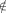
E. نشير بواسطة NG(i) إلى مجموعة الجيران لـ i في G، أي، NG(i) = {j ∈ V : ij ∈ E}. نشير بواسطة dG(i) إلى درجة من i في G، أي، dG(i) = |NG(i)|.نحن نعتبر الشبكات ذات الحواف المرجحة. نشير بـ wij ∈ ℝ إلى وزن الاتصال من i إلى j، وسنسمي هذه القيمة التأثير التي يمتلكها i على j. نحن لا نفترض أن علاقة التأثير متماثلة، أي، فمن الممكن أنه بالنسبة لـ ij ∈ E لدينا wij≠wji. ما لم يُنص على خلاف ذلك، سنفترض أن ∀i,j∈V wij ≥ 0. ونفترض أيضًا أنه إذا كان ijE فإن wij = 0. نشير بواسطة wi إلى مجموع التأثير على العقدة i، أي، wi = ∑ j∈N(i)wji. سنفترض عادةً أن ∀i∈V wi > 0.
دع Γ(V ) يشير إلى مجموعة كل التسلسلات المرتبة للعناصر من V بدون تكرار. دع γi يشير إلى العنصر (العقدة) i للتسلسل γ ∈ Γ(V )، و|γ|يشيرإلىعددالعناصرفي γ ∈ Γ(V ). أخيرًا، نطلق على γ ∈ Γ(V ) تسلسل كامل إذا كان |γ|= |V |ونشيرإلىمجموعةالتسلسلاتالكاملةبواسطة Γ∗(V ).
لجعل الترميز أكثر قابلية للقراءة، غالبًا ما نقوم بحذف الشبكة نفسها من الترميز عندما تكون واضحة من السياق، مثلًا، وذلك بكتابة N(i) بدلاً من NG(i). نتعامل أحيانًا مع التسلسلات كمجموعات، عندما لا يكون الترتيب مهمًا. نستخدم ⊕للدلالةعلىعمليةالتسلسلعبرالتسلسلات.
2.2 مشاكل حسابية
في تخفيضاتنا، سوف نستخدم نسختين قياسيتين من مشكلة تغطية المجموعات، القرار والتحسين التوافقي.
تعريف1 (تغطية المجموعات [28]). يتم تعريف مثال لمشكلة تغطية المجموعات بواسطة الكون U = {u1,…,u|U|}،ومجموعةمنالمجموعات𝒮 = {S1,…,S|𝒮|}مثل∀jSj ⊂ U، وعدد صحيح k ≤|𝒮|. الهدف هو تحديد ما إذا كان هناك عناصر k موجودة في 𝒮 والتييساوياتحادها U.
تعد تغطية المجموعات واحدة من مشكلات مكتملة NP الكلاسيكية لـ 21 Karp.
نظرية1 ([28]). مشكلة تغطية المجموعات هي مكتملة NP.
لإثبات صلابة التقريب سوف نستخدم النسخة المصغرة للمشكلة.
تعريف2 (التغطية الدنيا للمجموعات). يتم تعريف مثيل لمشكلة الحد الأدنى لتغطية المجموعات بواسطة الكون U = {u1,…,u|U|}ومجموعةمنالمجموعات S = {S1,…,S|S|}مثل∀jSj ⊂ U. الهدف هو العثور على المجموعة الفرعية S∗⊆ S بحيث يكون اتحاد S∗ يساوي U وحجم S∗ في حده الأدنى.
بالنسبة إلى α ≥ 1، فإن التقريب α لمثيل معين لمشكلة التقليل هو حل ممكن يكون هدفه ضمن عامل α لأي حل أمثل. سوف نستخدم حقيقة أن مشكلة الحد الأدنى لمجموعة التغطية يصعب تقريبها.
نظرية2 ([27]). بالنسبة لأي 𝜖 > 0، لا يمكن تقريب الحد الأدنى لمجموعة التغطية الثابتة إلى (1 − 𝜖)lnn، ما لم يكن P=NP.
ننتقل الآن إلى تحديد نموذج الانتشار الاستراتيجي ومشكلة التحسين الرئيسية في دراستنا.
3 تعريف المشكلة
في هذا القسم نصف عملية نشر الشبكة الإستراتيجية، والتي هي المحور الرئيسي لدراستنا، بالإضافة إلى المشكلة الحسابية المتعلقة بها.
معظم نماذج الانتشار هي نماذج عشوائية بحتة [10, 9]. ومع ذلك، فإننا نركز في هذا العمل على النموذج الاستراتيجي للانتشار لمراعاة الحالات التي يؤثر فيها الترابط بين الأهداف على وقت التنشيط، وبالتالي يتم التخطيط بشكل استراتيجي لاختيار الترتيب الذي سيتم به استهداف العقد للتنشيط.
في هذا النموذج، تكون عملية الانتشار مدفوعة بعامل استراتيجي. في بداية العملية، تكون عقدة واحدة فقط مختارة من الشبكة، العقدة الأولية iS، نشطة. بعد ذلك، يختار الوكيل التسلسل γ ∈ Γ(V ) الذي يوفر الترتيب الذي سيتم به تنشيط العقد. يتم إعطاء احتمال التنشيط الناجح للعقدة i في محاولة واحدة بواسطة:
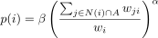
حيث A هي مجموعة العقد النشطة حاليًا (في بداية العملية تتكون فقط من البذرة)، وα,β ∈ [0,1] هي ثوابت. ما لم يُنص على خلاف ذلك، سنفترض أن α = β = 1. لاحظ أن الوقت المتوقع لتنشيط العقدة i مع احتمال التنشيط غير الصفر هو τ(i) =
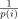
. بواسطة τ(γ) سنشير إلى الوقت المتوقع لتنشيط جميع العقد في التسلسل γ.تم اقتراح هذا النموذج من قبل Alshamsi وآخرون [1] للشبكات غير الموجهة ذات الحواف غير الموزونة. فإذا افترضنا أن wij = 1 ⟺ ij ∈ E فإن نموذجنا يكافئ تماما النموذج الذي اقترحه Alshamsi وآخرون [1].
نحدد الآن المشكلة الحسابية الرئيسية لدراستنا.
تعريف3 (تسلسل الانتشار الجزئي الأمثل). يتم تعريف هذه المشكلة من خلال صف (G,iS,z)، حيث G = (V,E,W) هي شبكة معينة ذات حواف مرجحة، وiS ∈ V هي العقدة الأولية وz ≤ n في عدد العقد المطلوب تنشيطها. الهدف هو تحديد γ∗∈ Γ(V ) بحيث تكون γ1∗ = iS و|γ∗|= z وτ(γ∗) في حدها الأدنى.
بمعنى آخر، نعتزم إيجاد أسرع طريقة لتنشيط العقد z في الشبكة. عندما يكون z = |V |فيالتعريفأعلاه،تسمىالمشكلةببساطةتسلسلالانتشارالأمثل (الكامل).
ملاحظة1. في حالة الأوزان الصحيحة ذات طول متعدد الحدود، لأي مثيل لمشكلة تسلسل الانتشار الأمثل، يوجد مثيل مكافئ متعدد الحدود بأوزان ثنائية.
Proof. دع (G,iS,|V |) يكون مثالًا محددًا لتسلسل الانتشار الأمثل. من أجل إنشاء نسخة مكافئة بأوزان 0∕1، نستبدل كل حافة ij بمجموعة من wij المتوازية 2-مسارات {⟨i,ki,j,1,j⟩,…, ⟨i,ki,j,wij,j⟩}، وقمنا بتعيين أوزان الحواف الجديدة إلى wiki,j,r = wki,j,rj = 1، wki,j,ri = wjki,j,r = 0، لـ r = 1,…,wij.
بالنظر إلى حل ممكن γ للمثيل الأصلي، نحصل على حل ممكن γ′للمثيلالمنشأعنطريقتنشيطجميعالعقد ki,j,r مباشرة بعد تنشيط العقدة i في التسلسل الأصلي (لاحظ أن الوقت المتوقع لتنشيط كل عقدة ki,j,r هو 1). وبالتالي، إذا كانت قيمة الحل γ هي t، فإن قيمة γ′هي t + ∑
ij∈E 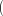 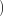
بالنظر إلى حل ممكن γ′للمثيلالمبنيللنسخةالثنائيةللمشكلة،يمكنناالحصولعلىحلبقيمةأقلأومتساويةعنطريقتنشيطجميعالعقد ki,j,r في كتلة واحدة مباشرة بعد تنشيط العقدة i (مرة أخرى، الوقت المتوقع لتنشيط العقدة ki,j,r هو دائمًا 1، بينما يساهم في وقت تنشيط العقدة j). لمثل هذا التسلسل، يمكننا الحصول على الحل المقابل γ للمثيل الأصلي للمشكلة عن طريق إزالة جميع العقد ki,j,r منه. إذا كانت قيمة الحل γ′هي t، فإن قيمة γ هي t−∑ ij∈Ewij+wji.
لاحظ أن هذا التخفيض لا يعمل بشكل عام بالنسبة لتسلسل الانتشار الجزئي الأمثل إذا كان z < |V |. □
4 حساب الحل الأمثل
نحن الآن نصف نتائجنا بشأن إيجاد طريقة فعالة لحساب الحل الدقيق لمشكلة تسلسل الانتشار الأمثل.
4.1 صعوبة إيجاد الحل الأمثل
أولاً، نوضح أن إصدار القرار لمشكلة تسلسل الانتشار الجزئي الأمثل هو NP-كامل في حالة عامة.
Proof. إصدار القرار لمشكلة تسلسل الانتشار الجزئي الأمثل هو كما يلي: بالنظر إلى الشبكة G = (V,E,W)، والعقدة الأولية iS، وعدد العقد المطلوب تنشيطها z، والقيمة t∗∈ ℝ+، هل يوجد تسلسل من العقد γ∗∈ Γ(V ) يبدأ بـ iS مثل |γ∗|= z وτ(γ∗) ≤ t∗؟
من الواضح أن هذه المشكلة موجودة في NP، كما هو موضح في الحل، أي، سلسلة من العقد γ∗∈ Γ(V )، يمكننا حساب الوقت المتوقع للتنشيط في وقت متعدد الحدود.
لإثبات صلابة NP للمشكلة، سنعرض تخفيضًا من مشكلة تغطية المجموعات الكاملة NP.
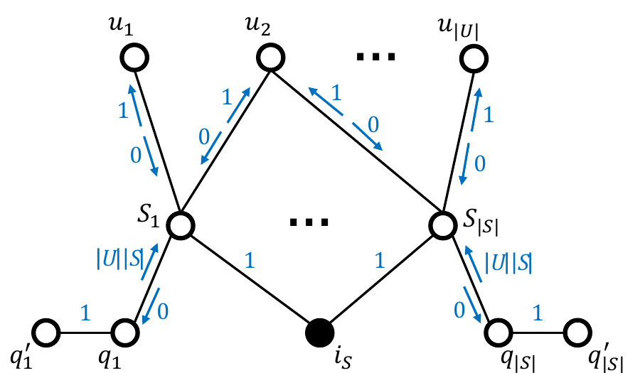
دع (U,𝒮,k) يكون مثالًا لمشكلة تغطية المجموعات. نحدد الشبكة G على النحو التالي (يرد مثال على هذه الشبكة في الشكل 1):
- مجموعة العقد: لكل Si ∈𝒮،نقومبإنشاءثلاثعقد،يُشارإليهابـ Si وqi وq′i. لكل ui ∈ U، نقوم بإنشاء عقدة واحدة ui. بالإضافة إلى ذلك، قمنا بإنشاء عقدة واحدة iS.
- مجموعة الحواف: لكل عقدة Si، نقوم بإنشاء حافة SiiS. لكل عقدة qi، نقوم بإنشاء الحواف qiSi وqiq′i. أخيرًا، لكل عقدة ui وكل Sj بحيث ui ∈ Sj نقوم بإنشاء حافة uiSj.
- مصفوفة الوزن: لكل حافة uiSj قمنا بتعيين الأوزان على wuiSj = 0 وwSjui = 1. لكل حافة Siqi قمنا بتعيين الأوزان على wSiqi = 0 وwqiSi = |U||𝒮|. بالنسبة لجميع أزواج العقد الأخرى المتصلة بحافة، قمنا بتعيين الأوزان على 1.
دع z = k + |U|+1 (نعتزم أن تسلسل الحل سوف ينشط العقدة iS، k العقد في 𝒮 وجميعالعقدفي U)، والقيمة t∗ = k(|U||𝒮|+1) + |U||𝒮|. الآن، فكر في مثال لمشكلة تسلسل الانتشار الجزئي الأمثل (G,iS,z). سنبين الآن أن حل هذا المثيل ذو القيمة t∗ على الأكثر يتوافق مع حل المثيل المحدد لمشكلة تغطية المجموعات.
لاحظ أن الوقت المتوقع لتنشيط كل عقدة Si هو دائمًا |U||𝒮|+1، بينما بالنسبة للوقت المتوقع لتنشيط العقدة ui لدينا τ(ui) ≤|{Sj : ui ∈ Sj}|≤|𝒮|. لاحظ أيضًا أنه لا يمكن تنشيط أي من العقد qi أو أي من العقد q′i عندما تكون iS هي العقدة الأولية، حيث أن تأثير Si على qi يساوي صفرًا.
أولاً، سوف نوضح أنه إذا كان هناك حل 𝒮∗ للمثيل المحدد لمشكلة تغطية المجموعات، فهناك أيضًا حل للمثيل المنشأ لمشكلة تسلسل الانتشار الجزئي الأمثل بقيمة t∗ على الأكثر. يمكننا إنشاء مثل هذا الحل عن طريق تنشيط كل عقدة Si ∈𝒮∗ أولاً (k عقد مفعلة في الوقت المتوقع |U||𝒮|+1 لكل منها) ثم تنشيط جميع العقد ui (|U|عقدمفعلةفيوقتمتوقعلايتجاوز|𝒮|لكلمنها). مثل γ∗ ينشط k + |U|العقدفيالوقتالمتوقعالذيلايتجاوز k(|U||𝒮|+1) + |U||𝒮|،وبالتاليفهوحلللمثيلالمنشألمشكلةتسلسلالانتشارالجزئيالأمثلذاتالقيمةعلىالأكثر t∗.
ثانيًا، لإكمال إثبات صلابة NP، علينا أن نبين أنه إذا كان هناك حل γ∗ للمثيل المنشأ لمشكلة تسلسل الانتشار الجزئي الأمثل بقيمة t∗ على الأكثر، فعندئذ يوجد أيضًا حل للمثيل المحدد لمشكلة تغطية المجموعات. مثل هذا الحل هو 𝒮∗ = γ∗∩𝒮،أي،واختيارالمجموعات Si المقابلة للعقد Si التي تحدث في التسلسل γ∗. لاحظ أنه لا يمكن أن يكون هناك أكثر من k من هذه العقد، حيث أن تنشيط k + 1 العقد Si توقع الوقت (k + 1)(|U||𝒮|+1) > t∗. وبما أن هذه هي الحالة، فمن أجل تنشيط k + |U|العقدبخلاف iS، يجب على التسلسل γ∗ تنشيط جميع العقد في U. ومع ذلك، لتنشيط العقدة ui، علينا أولاً تنشيط عقدة واحدة على الأقل من العقد المجاورة لها، أي، العقدة Sj مثل ui ∈ Sj. لذلك، لكل عقدة ui يجب أن توجد عقدة واحدة على الأقل Sj ∈ γ∗∩ S مثل ui ∈ Sj. ومن ثم، يعد S∗ = γ∗∩𝒮 حلاًصالحًاللمثيلالمحددلمشكلةتغطية المجموعات.
أخيرًا، يمكننا استخدام البناء في الملاحظة 1 لاستبدال كل حافة qiSi بمجموعة من المسارات المتوازية مع أوزان الحواف في {0,1}. لاحظ أن مثل هذا الاستبدال لا يغير قيمة الهدف حيث أن العقد qi، وبالتالي العقد الوسيطة المضافة على المسارات المتوازية، لا يتم تنشيطها أبدًا. وبهذا ينتهي الدليل. □
ولذلك، لا توجد خوارزمية متعددة الحدود لإيجاد الطريقة المثلى لتنشيط عدد معين من العقد في عملية الانتشار الاستراتيجي، إلا إذا كان P = NP. ومع ذلك، نقترح الآن خوارزمية أسية تعتمد على تقنية البرمجة الديناميكية.
4.2 خوارزمية البرمجة الديناميكية
نقدم خوارزمية لحساب الحل الأمثل للمشكلة باستخدام تقنية البرمجة الديناميكية [29]. الفكرة الرئيسية وراء البرمجة الديناميكية هي تقسيم المشكلة الرئيسية إلى عدد من المشاكل الفرعية الأصغر والأسهل في حلها بطريقة متكررة. ومع ذلك، على عكس العودية القياسية حيث غالبًا ما يتم تكرار نفس الحساب عدة مرات، في البرمجة الديناميكية يتم حساب الحل لكل مشكلة فرعية مرة واحدة فقط ويتم تخزينه في الذاكرة لاستخدامه في المستقبل. على مر السنين، تم تطوير تقنيات البرمجة الديناميكية في اتجاهات مختلفة [30, 31, 32, 33]، ومع ذلك فإن خوارزميتنا تعتمد على الإصدار الأصلي من التقنية.
لاحظ أنه في إعداداتنا، يعتمد احتمال التنشيط لأي عقدة معينة على مجموعة العقد النشطة في الشبكة، ولكنه لا يعتمد على الترتيب الذي تم به تنشيط هذه العقد. وبالتالي، يجب حساب الحل لكل مجموعة من العقد النشطة مرة واحدة فقط. علاوة على ذلك، فإن حل المشكلة الفرعية المتمثلة في إيجاد الطريقة المثلى لتفعيل عقد k في الشبكة يسمح بإيجاد الحل بكفاءة لعقد k + 1، حيث يمكن التعبير عن إجمالي وقت التنشيط المتوقع بطريقة عودية كمجموع وقت تفعيل العقد k الأولية ووقت تنشيط العقدة الأخيرة. إن فكرة استخدام حلول للمسائل الفرعية الأصغر لحل مشكلة أكبر هي المفهوم الأساسي وراء البرمجة الديناميكية، ومن ثم نجدها طريقة تحسين مناسبة لحل مشكلة تسلسل الانتشار الجزئي الأمثل.
تعتمد الخوارزمية على علاقة التكرار التالية، حيث τ∗(C) هو الحد الأدنى من الوقت المتوقع لتنشيط مجموعة من العقد C:
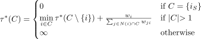
حيث نفترض أن الجمع على المجموعة الفارغة ينتج عنه صفر والقسمة على صفر ينتج عنها ∞.
من بين المجموعات ذات الحجم الأول، فقط المجموعة التي تتكون من العقدة الأولية لديها وقت محدد للتنشيط. بالنسبة للمجموعات الأكبر من واحدة، نقسم المشكلة إلى حساب الوقت الأمثل لتنشيط جميع العقد باستثناء العقدة الأخيرة، ثم حساب وقت تنشيط العقدة الأخيرة. نظرًا لأنه يتم تنشيط العقد في عملية النشر الاستراتيجي بشكل تسلسلي، فيجب تنشيط إحدى العقد i من المجموعة C أخيرًا، ونحن قادرون على حساب وقت التنشيط بناءً على المعلومات الخاصة بالعقد الأخرى في الشبكة النشطة بالفعل. لاحظ أن محاولة تنشيط عقدة بدون أي جيران نشطين (أو بمجموع التأثيرات من هؤلاء الجيران يساوي الصفر) سيؤدي إلى قيمة الصيغة تساوي ∞.
يتم تقديم الكود الكاذب لخوارزمية البرمجة الديناميكية كخوارزمية 1، بينما يعرض الشكل 2 الحدس وراء الخوارزمية من خلال إظهار كيفية عملها على بنية رسم بياني محددة.
_________________________________________________________________________________________
مدخل: شبكة مرجحة (V,E,W)، وعقدة أولية iS ∈ V ، وعدد العقد المطلوب تنشيطها z.
مخرج: تسلسل تفعيل العقد z بدءًا من iS مع أقل وقت متوقع للتنشيط.
for C ⊆ V
for C ⊂ V : (|C|= k) ∧ (τ∗[C] < ∞)
for i ∈ V : (iC) ∧ (N(i) ∩ C≠∅)
Δτ ←
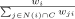
if τ∗[C] + Δτ < τ∗[C ∪{i}]
return γ∗[arg minC⊆V :|C|=zτ∗[C]]
خوارزمية 1: خوارزمية البرمجة الديناميكية للانتشار الاستراتيجي ___________________________________________________________________________________
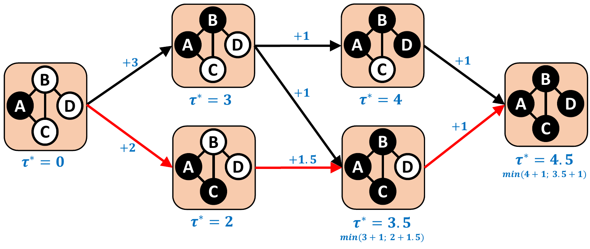
في الإدخال τ∗[C] نحسب الحد الأدنى من الوقت المتوقع اللازم لتنشيط جميع العقد في المجموعة C، بينما في الإدخال γ∗[C] نحتفظ بتسلسل التنشيط مما يسمح لنا بتحقيق هذا الوقت المتوقع الأمثل. في تنفيذ رقم k للحلقة في السطر 5 نقوم بحساب قيم الإدخالات في τ∗ وγ∗ للمجموعات C مثل |C|= k + 1. نقوم بذلك عن طريق التكرار (في حلقة في السطر 6) على جميع مجموعات العقد ذات الحجم k التي يمكن تنشيطها عندما نبدأ العملية من العقدة الأولية iS ثم التكرار (في حلقة في السطر 7) على جميع العقد المحتملة التي يمكن استهدافها، أي، العقد ذات احتمال التنشيط غير الصفر، عندما تكون مجموعة العقد النشطة C. في السطور 8-11 نقوم بتحديث أفضل طريقة لتنشيط العقد في المجموعة C ∪{i}عندتنشيطالعقدفي C أولاً وتنشيط العقدة i بعد ذلك يكون له وقت متوقع أقل من أسرع طريقة معروفة حاليًا لتنشيط العقد في C ∪{i}.
أما بالنسبة لتفاصيل التنفيذ، فيمكن تنفيذ τ∗ وγ∗ كجداول تجزئة. في هذه الحالة، التحقق مما إذا كان τ∗[C] < ∞يعادلالتحققمماإذاكان τ∗ يحتوي على إدخال C وبالتالي يمكن حذف الأسطر 1-2.
لاحظ أيضًا أنه أثناء تنفيذ رقم k للحلقة في السطر 5 نحتاج فقط إلى إدخالات في الجدولين τ∗ وγ∗ للمجموعات C مثل |C|= k. ومن ثم، لتقليل متطلبات الذاكرة، يمكننا فقط الاحتفاظ بإدخالات الذاكرة من الجدولين τ∗ وγ∗ لحجمين من المجموعات: تلك الخاصة بالحجم k، المحسوبة في التنفيذ السابق للحلقة (أو التي تمت تهيئتها في أسطر 3-4 في حالة التنفيذ الأول) وتلك الخاصة بالحجم k + 1، التي يتم حسابها في التنفيذ الحالي للحلقة.
على الرغم من إمكانيات التحسين هذه، تظل خوارزمية البرمجة الديناميكية أسية، حيث إنها تعتبر جميع المجموعات الفرعية من العقد الممكن تنشيطها. إذا كان عدد العقد المراد تنشيطها ثابتًا، فإن الخوارزمية متعددة الحدود.
نظرية4. الخوارزمية 1 تحل مشكلة تسلسل الانتشار الجزئي الأمثل في الوقت المناسب 𝒪(|V |z+1|E|).
في القسم 4.4، نقدم برنامجًا ديناميكيًا يعمل بشكل أكثر كفاءة عندما تكون الشبكة ذات درجة محدودة وعرض شجرة محدود. لاحظ أنه من الشائع استخدام البرمجة الديناميكية لحل مشكلات التحسين على الرسوم البيانية ذات عرض الشجرة المحدود، انظر، مثلًا، [34].
هناك طريقة بديلة لتطوير خوارزمية لإيجاد طريقة فعالة لتنشيط الشبكة وهي استخدام تقنيات التعلم المعزز [35]. يعتمد التعلم المعزز على فكرة اتخاذ سلسلة من القرارات من خلال إيجاد توازن بين الاستغلال (القيام بأفضل إجراء حاليًا للحصول على أرباح قصيرة الأجل) والاستكشاف (التحقيق في إجراءات أخرى على أمل تحقيق مكاسب طويلة المدى). في حالة الانتشار الاستراتيجي، سيكون الاستغلال هو تنشيط العقدة ذات احتمالية التنشيط الأعلى، بينما سيؤدي الاستكشاف إلى تنشيط العقدة ذات احتمالية التنشيط الأقل من أجل تسهيل تنشيط العقد المجاورة لها. ومع ذلك، فإن الخوارزمية القائمة على التعلم المعزز لن تضمن أن تسلسل التنشيط المحدد هو الحل الأمثل، على عكس خوارزمية البرمجة الديناميكية المقدمة، والتي توفر مثل هذا اليقين. ومن ثم، فإننا نترك تطوير خوارزمية تعتمد على التعلم المعزز كعمل مستقبلي محتمل.
نناقش الآن طرقًا أخرى لتحسين هياكل الشبكة الأكثر تقييدًا.
4.3 التفكيك إلى مكونات متصلة ببعضها البعض
سنبين الآن أن البحث عن الطريقة المثلى لتنشيط جميع عقد الشبكة يمكن أن يكون أسهل باستخدام التحلل إلى مكونات متصلة ثنائيًا.
العقدة المقطوعة في الشبكة (وتسمى أيضًا نقطة المفصل) هي عقدة تؤدي إزالتها إلى تقسيم الشبكة إلى مكونين متصلين أو أكثر. ومن خلال فصل الشبكة إلى عقد مقطوعة نحصل على تحلل إلى مكونات متصلة بشكل ثنائي. المكون المتصل ثنائيًا هو شبكة فرعية قصوى (من حيث التضمين) بحيث أن إزالة أي عقدة منها لن يؤدي إلى فصلها. يظهر في الشكل 3 مثال على التحلل إلى مكونات متصلة ثنائيًا. لاحظ ظهور نسخة من العقدة المقطوعة في كل مكون متصل ثنائيًا تنتمي إليه.
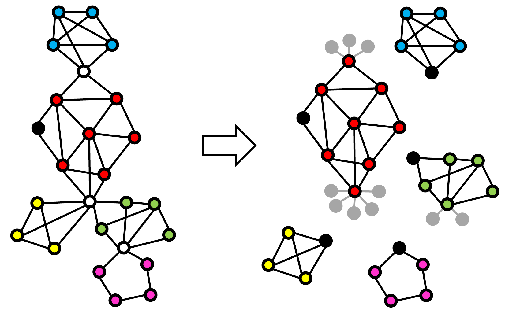
ويمكن النظر في عملية الانتشار الاستراتيجي في كل مكون مترابط بشكل منفصل. وذلك لأن كل مكون متصل ثنائيًا لديه نقطة بداية واحدة محتملة فقط للانتشار (سواء كانت إما العقدة الأولية في حالة المكون المتصل ثنائيًا الذي يحتوي عليها أو العقدة المقطوعة الأقرب إلى العقدة الأولية في حالة جميع المكونات الأخرى). تتم الإشارة إلى ذلك باللون الأسود للعقدة في الشكل 3. بمجرد تنشيط نقطة البداية لمكون معين C، فإن حالة التنشيط في المكونات الأخرى المتصلة بالشبكة لا تؤثر على التنشيط هي C.
وذلك لأن احتمالية تنشيط العقدة تتأثر فقط بحالة تنشيط العقد المجاورة لها وقيمة wi (لتذكير القارئ، wi = ∑ j∈N(i)wji). فقط العقد المقطوعة لها جيران في المكونات الأخرى المتصلة ثنائيًا، وبالتالي بالنسبة لجميع العقد غير المقطوعة، تكون هذه الملاحظة تافهة. أما بالنسبة لأي عقدة مقطوعة i، لاحظ أنه لا يمكن تنشيط جيرانها في المكونات الأخرى المتصلة ثنائيًا إلا بعد تنشيط i (حيث أن جميع المسارات بينها وبين العقدة الأولية تمر عبر العقدة المقطوعة). وبالتالي، فإن الطريقة الوحيدة التي يؤثر بها جيران العقدة المقطوعة i في المكونات الأخرى المتصلة ثنائيًا على احتمالية تنشيط i هي إضافة قيمة wi. لمراعاة هذه الحقيقة، نقوم بإنشاء بذرة إضافية متصلة بنسخ من i لا تمثل نقاط بداية للتنشيط أثناء تحلل المكون المتصل ثنائيًا (تم وضع علامة باللون الرمادي على الشكل 3).
لتذكير القارئ، في هذا العمل نعتبر الشبكات غير الموجهة (لاحظ أن تعريف المكونات المتصلة ثنائيًا يختلف بالنسبة للشبكات الموجهة). ومع ذلك، فإننا لا نفترض أن علاقة التأثير متماثلة، أي، فمن الممكن أنه بالنسبة لـ ij ∈ E لدينا wij≠wji. نظرًا لأننا نعتبر التحلل إلى مكونات منفصلة في سياق عقدة أولية معينة، فلا يوجد أبدًا توضيح من حيث أوزان الحواف التي يجب استخدامها في حالة العقد المقطوعة. لحساب احتمال التنشيط لعقدة القطع i، لكل جار j فقط الوزن wji يؤخذ بعين الاعتبار. علاوة على ذلك، يمكن فقط لجيران i الأقرب إلى العقدة الأولية من i أن يكون لديهم مساهمة إيجابية في احتمالية التنشيط، حيث لا يمكن تنشيط جيران i البعيدين عن العقدة الأولية إلا بعد تنشيط i. في الوقت نفسه، يؤثر i على وقت تنشيط جارته j من خلال الوزن wij، ويمكن أن يكون له مساهمة إيجابية عندما يكون j أقرب وعندما يكون بعيدًا عن العقدة المصدر أكثر من i.
4.4 الحل الأمثل للشبكات ذات عرض الشجرة المحدود
سنعرض الآن خوارزمية متعددة الحدود تجد الطريقة المثلى لتنشيط شبكة ذات عرض شجرة ودرجة محددة بالثوابت.
دع G = (V,E,W) تكون شبكة عشوائية. اجعل (T,F) عبارة عن شبكة حيث تحتوي كل عقدة على مجموعة فرعية من العقد من V ، أي، ∀t∈Tt ⊆ V (سنسمي كل مجموعة فرعية بـ حقيبة). مثل (T,F) هو تحليل شجرة لـ G (انظر مثلًا، [36]) إذا وفقط إذا تم استيفاء الشروط التالية:
- كل عقدة من V موجودة في حقيبة واحدة على الأقل، أي، ⋃ t∈Tt = V .
- لكل حافة e ∈ E يوجد كيس يحتوي على طرفي e، أي، ∀ij∈E∃t∈T{i,j}⊆ T.
- لكل عقدة v ∈ V شبكة فرعية من (T,F) ناتجة عن أكياس تحتوي على v متصلة.
عرض الشجرة 𝜃 للتحلل هو حجم أكبر كيس فيها ناقص واحد، أي، 𝜃 = maxt∈T|t|−1. عرض الشجرة للشبكة هو الحد الأدنى من عرض الشجرة لجميع تحللها الشجري. يُقال إن المشكلة قابلة للتتبع ذات معلمة ثابتة [37]، فيما يتعلق بالمعلمة k, إذا كان من الممكن حل أي مثيل لمشكلة الحجم N في الوقت المناسب f(k) ⋅ NO(1)، لبعض الوظائف القابلة للحساب f(⋅). لقد أظهرنا أن مشكلة الانتشار الاستراتيجي الأمثل هي مشكلة ذات معلمة ثابتة قابلة للتتبع فيما يتعلق بمجموع عرض الشجرة والحد الأقصى للدرجة.
4.4.1 الانتشار الكامل
لشرح الفكرة بشكل أفضل، نقدم أولاً خوارزمية لحالة الانتشار الكاملة.
نظرية5. اجعل G = (V,E,W) شبكة ذات درجة قصوى δ. توجد خوارزمية، بالنظر إلى تحليل الشجرة لعرض الشجرة 𝜃، تجد الطريقة المثلى لتنشيط العقد في V في الوقت المناسب 𝒪(𝜃δ(𝜃δ)!2n).
فيما يلي، نفترض أن تحليل الشجرة متجذر في بعض العقد tR، وهو نفس الشيء بالنسبة للترتيب من أسفل إلى أعلى ومن أعلى إلى أسفل. نستخدم الترميز التالي:
- c(t) يشير إلى تسلسل أبناء t؛
- γ|X يشير إلى تسلسل γ الذي يتكون فقط من العقد الموجودة في المجموعة X؛
- γ⊲x يشير إلى تسلسل γ الذي يتكون من جميع العناصر التي تسبق x؛
- γ▸x يشير إلى تسلسل γ الذي يتكون من x بالإضافة إلى جميع العناصر التالية x؛
- Ttopdown يشير إلى تسلسل العقد في T بترتيب من أعلى إلى أسفل.
فيما يلي سوف نطلق على التباديلين γ وγ′للعقدمن G متوافق، ويشار إليهما بـ γ ∼ γ′،إذاوفقطإذاقاموابتنشيطالعقدالمشتركةبينهمبنفسالترتيب،أي، γ|γ′ = γ′|γ.
لكل عقدة من t تحليل الشجرة T نقوم بحساب سجل يتكون من الحقول التالية:
- ϒ[t] يخزن جميع تبديلات العقد في الحقيبة t والعقد المجاورة لها والتي يمكن أن تكون جزءًا من حل صالح للمشكلة؛
- τ[t,γ,i] يخزن الوقت المتوقع لتنشيط كل عقدة في i ∈ t عند التنشيط بالترتيب المعطى بواسطة γ؛
- τ∗[t,γ] يخزن أصغر وقت متوقع لتنشيط جميع العقد في الشبكة الفرعية G الناتجة عن العقد الموجودة في الشجرة الفرعية T المتجذرة في t، عندما يتم تنشيط العقد في t والعقد المجاورة لها بالترتيب المعطى بواسطة γ.
لحساب السجلات، نقوم باجتياز تحليل الشجرة بترتيب تصاعدي (بالنظر إلى الجذر tR) ولكل عقدة t نقوم بالخطوات التالية:
-
حساب:
-
لكل γ ∈ ϒ[t] وكل γi ∈ γ|t حساب:
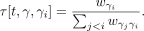
-
لكل حساب γ ∈ ϒ[t]:
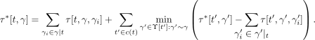
بعد اجتياز الشجرة بهذه الطريقة، يمكن تحديد الحد الأدنى من الوقت المطلوب لتنشيط الشبكة بالكامل G بدءًا من iS على أنه minγ∈ϒ[tR]τ∗[tR,γ]. من أجل إعادة بناء التسلسل الذي يسمح بتنشيط الشبكة بأكملها في الوقت الأمثل، يمكننا تشغيل الخوارزمية 2.
_________________________________________________________________________________________
مدخل: تحليل الشجرة (T,F) للشبكة الموزونة (V,E,W)، مع القيم المحسوبة لـ τ∗.
مخرج: تسلسل تفعيل العقد في V بدءًا من iS مع الحد الأدنى من وقت التنشيط المتوقع.
for t ∈ Ttopdown
γ ← arg minγ′∈ϒ[t]:γ′∼γ∗τ∗[t,γ′]
if γiγ∗
else
خوارزمية 2: خوارزمية تعيد بناء الطريقة المثلى لتنشيط جميع عقد الشبكة ذات عرض الشجرة المحدد ودرجتها. _____________________________________________________________________________
دعونا الآن نعلق على إجراءات ملء السجلات.
في الخطوة 1، نقوم بجمع كل التباديل للعقد الموجودة في الحقيبة t وجيرانها والتي يمكن أن تكون جزءًا من حل صالح للمشكلة، وفقًا لثلاثة شروط. يؤكد الشرط الأول أنه إذا كان التقليب يحتوي على العقدة الأولية، فسيتم تنشيطه باعتباره العقدة الأولى. الشرط الثاني يضمن أن كل عقدة في الحقيبة t بخلاف العقدة المصدر لديها جار نشط واحد على الأقل في لحظة التنشيط (لاحظ أنه لكل عقدة في t جميع جيرانها موجودون في التقليب). ينص الشرط الثالث على أن التقليب γ يسمح بتنشيط جميع العقد في الشجرة الفرعية t، أي، وأنه لكل فرع من t في تحليل الشجرة يوجد تبديل صالح واحد على الأقل γ′ينشطالعقدمن γ بنفس ترتيب γ.
في الخطوة 2، نقوم ببساطة بحساب وقت تنشيط كل عقدة في الحقيبة t، وفقًا للتعريف الوارد في القسم 3، وتخزينه في الجدول τ. مرة أخرى، لاحظ أنه بالنسبة لكل عقدة في t، فإن جميع العقد المجاورة لها موجودة في التقليب، وبالتالي لدينا معلومات كافية لحساب الوقت المتوقع للتنشيط.
أخيرًا، في الخطوة 3، نحسب الوقت الأمثل لتنشيط جميع العقد في الشجرة الفرعية t أثناء استخدام التقليب γ ونخزنه في الجدول τ∗. يتكون التعبير من مجموع وقت تنشيط العقد في الحقيبة t ومجموع جميع أبناء t، حيث نحسب لكل منهم الحد الأدنى على جميع التباديل المتوافقة ونطرح وقت تنشيط العقد في t. لاحظ أنه بما أن (T,F) هو تحليل الشجرة، فإن التداخل الوحيد المحتمل بين العقد في الأشجار الفرعية لمختلف أبناء t هو العقد الموجودة في الحقيبة t. وإلا فلن يتم ربط الرسم البياني الناتج عن الأكياس التي تحتوي على مثل هذه العقد المتداخلة، وبالتالي لن يتم استيفاء أحد شروط كونها تحلل الشجرة لـ (T,F).
بعد ملء الجداول ϒ، τ∗ وτ، نجتاز تحليل الشجرة مرة أخرى، هذه المرة بترتيب من أعلى إلى أسفل باستخدام الخوارزمية 2. قمنا ببناء الحل الأمثل للمشكلة على المتغير γ∗. في السطر 3، نختار γ التقليب مع أقل وقت ممكن لتنشيط جميع العقد في الشجرة الفرعية لـ t، المتوافق مع الحل الذي تم إنشاؤه حتى الآن. في السطور 4-11 نقوم بدمج γ في التسلسل γ∗ باستخدام المتغير المساعد γ′.
أما بالنسبة للتعقيد الزمني للخوارزمية، فإن العمليات الأكثر تكلفة (وكلاهما متساوية التكلفة) هي التحقق من وجود تسلسل متوافق لكل طفل من t في الشرط الثالث في الخطوة 1 وحساب الوقت اللازم لتنشيط العقد في الأشجار الفرعية لجميع أبناء t في المجموع الثاني في الخطوة 3. لتقييم التعقيد الزمني للخوارزمية، سنركز على التكلفة في الخطوة 3. نظرًا لأن كل عقدة t′هيعقدةفرعيةلعقدةأخرىعلىالأكثرفيتحليلالشجرة،لكل t′∈ T يتم تنفيذ حساب الحد الأدنى 𝒪((𝜃δ)!) مرة (عدد التباديل المختلفة γ ∈ ϒ[t]). نظرًا لوجود 𝒪(n) عقد في تحليل الشجرة، يتم تنفيذ حساب الحد الأدنى 𝒪((𝜃δ)!n) مرة. تكلفة تنفيذها مرة واحدة هي 𝒪(𝜃δ(𝜃δ)!)، حيث يتعين علينا التحقق من 𝒪((𝜃δ)!) العديد من التباديل في ϒ[t′] ولكل منها التحقق مما إذا كان γ′|γ = γ|γ′ في الوقت المناسب 𝒪(𝜃δ). ومن ثم، فإن إجمالي التعقيد الزمني للخوارزمية هو 𝒪(𝜃δ(𝜃δ)!2n).
4.4.2 الانتشار الجزئي
نقدم بعد ذلك خوارزمية للانتشار الجزئي في الشبكات ذات عرض الشجرة المحدود والدرجة المحددة.
نظرية 6. اجعل G = (V,E,W) شبكة ذات درجة قصوى δ. توجد خوارزمية، بالنظر إلى تحليل شجرة عرض الشجرة 𝜃، تجد طريقة مثالية لتنشيط العقد z في V في الوقت المناسب 𝒪(𝜃δ(𝜃δ)!2z2n).
نحن نستخدم بشكل أساسي نفس التدوين كما في القسم السابق. ومع ذلك، فيما يلي سوف نطلق على التباديلين γ ∈ Γ(X) و γ′∈ Γ(X′) للعقد من G متوافق، يُشار إليهما بـ γ ∼ γ′،إذاوفقطإذاقاموابتنشيطالعقدالمشتركةبينهمبنفسالترتيب،أي، γ|γ′ = γ′|γ، واتفقوا على العقد غير النشطة، أي، γ|X′∖γ′ = γ′|X∖γ = ⟨⟩ (هذا الاختلاف هو نتيجة النظر أيضًا التباديل غير الكاملة، أي، التباديل γ ∈ Γ(X) مثل γ < |X|).
السجل الذي نحسبه لكل عقدة من t تحلل الشجرة T يتكون الآن من الحقول التالية:
- ϒ[t] يخزن جميع تبديلات العقد في الحقيبة t والعقد المجاورة لها والتي يمكن أن تكون جزءًا من حل صالح للمشكلة؛
- τ[t,γ,i] يخزن الوقت المتوقع لتنشيط كل عقدة في i ∈ t عند التنشيط بالترتيب المعطى بواسطة γ؛
- τ∗[t,γ,k] يشير إلى أصغر وقت متوقع لتنشيط العقد k في الشبكة الفرعية لـ G الناتجة عن العقد الموجودة في الشجرة الفرعية لـ T المتجذرة في t، عندما يتم تنشيط العقد في t والعقد المجاورة لها بالترتيب المعطى بواسطة γ.
ومن ثم، فإن الاختلاف الوحيدمقارنة بإصدار النشر الكامل هو أن الجدول τ∗ مفهرس أيضًا بعدد العقد المطلوب تنشيطها.
لحساب السجلات، نقوم باجتياز تحليل الشجرة بترتيب تصاعدي (بالنظر إلى الجذر tR) ولكل عقدة t نقوم بالخطوات التالية:
-
حساب:
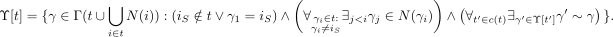
-
لكل γ ∈ ϒ[t] وكل γi ∈ γ|t حساب:
- لكل γ ∈ ϒ[t] وk = |γ|t|,…,z احسب قيمة τ∗[t,γ,k] باستخدام الخوارزمية 3.
_________________________________________________________________________________________
مدخل: تحليل الشجرة (T,F) للشبكة الموزونة (V,E,W)، مع قيم τ∗ المحسوبة حتى الآن، العقدة t مع تسلسل الأطفال c(t) = ⟨t1,…,t|c(t)|⟩.
for m = 0,…,k −
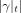
if i = 1
τ′[t,1,γ,m] ← min 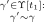
else
τ′[t,i,γ,m] ← minm′∈{0,…,m} 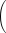
+min
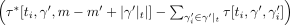
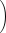
return ∑ γi∈γ|tτ[t,γ,γi] + τ′
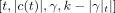
خوارزمية 3: خوارزمية حساب قيمة τ∗[t,γ,k]. ____________________________________________________________________________
بعد اجتياز الشجرة بهذه الطريقة، يمكن تحديد الحد الأدنى من الوقت المطلوب لتنشيط عقد z في الشبكة G بدءًا من iS على أنه minγ∈ϒ[tR]τ∗[tR,γ,z]. من أجل إعادة بناء التسلسل الذي يسمح بتنشيط عقد z في الوقت الأمثل، يمكننا تشغيل الخوارزمية 4.
_____________________________________________________________________________________________________________________________________________
مدخل: تحليل الشجرة (T,F) للشبكة الموزونة (V,E,W)، مع القيم المحسوبة τ∗ وτ′،وكيس t، والتسلسل γ∗∈ Γ(V ) وعدد صحيح k ≤ n.
مخرج: تسلسل تنشيط العقد z في V بدءًا من iS مع الحد الأدنى من وقت التنشيط المتوقع.
if k > 0
γ ← arg minγ′∈ϒ[t]:γ′∼γ∗τ∗[t,γ′,k]
if γiγ∗
else
for ti ∈⟨t|c(t)|,…,t1⟩
m ← arg minm′∈{0,…,k′}τ′[t,i − 1,γ,m′]
γ∗← ReconstructPartial(ti,γ∗,k′− m + |γ′|t|)
خوارزمية 4: ReconstructPartial(t,γ∗,k): خوارزمية تعيد بناء الطريقة المثلى لتنشيط عقد k في شبكة ذات عرض شجرة محدد ودرجة._________________________________________________________________________________
دعونا الآن نعلق على إجراءات ملء السجلات.
الخطوات 1 و 2 متطابقة تقريبًا مع خطوات خوارزمية النشر الكامل، مع وجود اختلاف ملحوظ وهو أننا هذه المرة نعتبر تسلسلات ليست بالضرورة كاملة.
في الخطوة 3، نسمي الخوارزمية 3 لحساب قيمة τ∗[t,γ,k]، أي، الوقت الأمثل لتنشيط العقد k في الشجرة الفرعية لـ t أثناء استخدام التقليب γ. ولتحقيق هذه الغاية، نقوم بزيارة جميع أطفال t، بالترتيب t1,…,t|c(t)|. بالنسبة إلى m ∈{0,…,k −|γ|t|}،نحسب τ′[t,i,γ,m]، الحد الأدنى من الوقت المتوقع المطلوب لتنشيط m العقد بخلاف تلك التي تم تنشيطها في t، في الشبكة الفرعية الناتجة عن اتحاد الأشجار الفرعية المتجذرة في t1,…,ti. نقوم بذلك باستخدام قيم τ′المحسوبةلأبناء t التي تسبق ti، أي، لـ t1,…,ti−1، بالإضافة إلى قيم τ∗ المحسوبة لـ ti. في عملية الاختيار، يشير m′إلىعددالعقدالمنشطةفيالشبكةالفرعيةالناتجةعناتحاد t1,…,ti−1، بينما يتم تنشيط بقية العقد m في الشجرة الفرعية المتجذرة في ti. يتم حساب القيمة التي تم إرجاعها للحد الأدنى من وقت تنشيط العقد k في الشجرة الفرعية لـ t أثناء استخدام التقليب γ كمجموع وقت تنشيط العقد من t والوقت الأمثل لتنشيط العقد k −المتبقيةفيجميعالعقدالتابعة |c(k)|لـ t.
يشبه التعقيد الزمني للخوارزمية حالة الانتشار الكامل، باستثناء أن لدينا الآن حلقتين إضافيتين، واحدة فوق k في الخطوة 3 والأخرى فوق m في السطر 6 من الخوارزمية 3، والتي تساهم بعامل إضافي قدره 𝒪(z2) في وقت التشغيل.
نحن غير قادرين على حساب الحل الأمثل في زمن كثير الحدود في الحالة العامة. ومع ذلك، نأمل أن نجد خوارزمية تقريبية متعددة الحدود. ننتقل الآن إلى تحليل الطرق الممكنة لتقريب الحل الأمثل.
ننتقل الآن إلى تقييم إمكانية تقريب الحل الأمثل لمشكلة تسلسل الانتشار الأمثل.
4.5 الحدود الدنيا للخوارزميات الإرشادية
يقترح Alshamsi وآخرون [1] استراتيجيتين إرشاديتين لتنشيط الشبكة في عملية الانتشار الاستراتيجي: الإستراتيجية الجشعة (دائما استهدف العقدة ذات أعلى احتمال للتنشيط) واستراتيجية الأغلبية (دائما استهدف العقدة ذات أكبر عدد من الجيران النشطين).
نظهر الآن أن أياً من هذه الاستراتيجيات لا يقترب من الحل الأمثل ضمن نسبة ثابتة.
نظرية7. لا يوجد ثابت r > 1 بحيث يكون اختيار تسلسل التنشيط باستخدام الإستراتيجية الجشعة هو خوارزمية تقريبية r. على وجه الخصوص، نسبة التقريب للاستراتيجية الجشعة هي Ω(log n).
Proof. سنعرض الآن سلسلة من الشبكات حيث تصل نسبة التقريب للخوارزمية الجشعة إلى ما لا نهاية.
بالنسبة لـ k ∈ ℕ معين، نقوم ببناء شبكة G(k)، حيث تكون مجموعة العقد V = {iS,a1,…,ak2,b1,…,bk−1}وحيثتكونمجموعةالحواف:
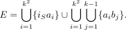
نحن نفترض أن وزن كل حافة هو 1. يتم عرض هيكل الشبكة G(k) في الشكل 4.
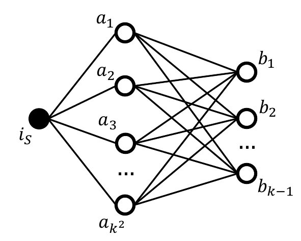
اجعل x هو عدد العقد ai النشطة حاليًا ودع y هو عدد العقد bi النشطة حاليًا. لدينا ذلك τ(ai) =
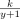
ولدينا ذلك τ(bi) =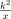
.سنقوم الآن بتحليل طريقتين مختلفتين لتفعيل جميع العقد في الشبكة G(k). أولاً، دعونا نفكر في الخوارزمية الجشعة. دع مؤشرات العقد ai، وكذلك مؤشرات العقد bj، يتم ترتيبها وفقًا لترتيب التنشيط، أي، العقدة a1 هي أول عقدة مفعلة ai، بينما العقدة b1 هي أول عقدة نشطة bi. لاحظ أنه يجب تنشيط ik العقد a على الأقل قبل تنشيط العقدة bi. وسنثبت هذا الادعاء بالتناقض. افترض أن bi يمكن أن يكون لديه j < ik جيران نشطين في لحظة التنشيط. خذ العقدة aj+1 (العقدة الأولى a تم تنشيطها بعد bi). في لحظة تفعيل bi يكون احتمال التنشيط
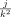
، في حين أن احتمال تفعيل aj+1 هو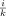
. وبما أننا نستخدم خوارزمية جشعة وتم تنشيط bi قبل aj+1، فيجب أن يكون لدينا ≥. ومع ذلك، هذا غير صحيح منذ j < ik. لدينا تناقض، لذلك يجب تفعيل ik العقد a على الأقل قبل تفعيل العقدة bi.وبسبب هذا، يجب تنشيط k عقد ai على الأقل مع وجود جار واحد نشط فقط، ثم يجب تنشيط k عقد ai على الأقل مع جارتين نشطتين فقط، وهكذا. بالتركيز فقط على وقت تفعيل العقد ai نجد أن إجمالي وقت التنشيط المتوقع للخوارزمية الجشعة هو:
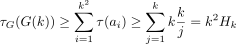
حيث Hk هو الرقم التوافقي k.
الآن، دعونا نفكر في خوارزمية A، حيث نقوم أولاً بتنشيط k العقد ai، ثم جميع العقد bi وأخيرًا العقد المتبقية ai. وقت تفعيل الشبكة بالكامل هو:
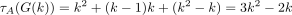
نظرًا لأن كل عقدة من العقد k الأولى ai يتم تنشيطها في الوقت المتوقع k (حيث أنها تحتوي على جار نشط واحد فقط، وهو iS)، يتم تنشيط كل عقدة bi في الوقت المتوقع k (حيث أن لها درجة k2 و k مجاورة نشطة في لحظة التنشيط) ويتم تنشيط كل عقدة من العقد k2 − k المتبقية ai في الوقت المتوقع 1.
النظر في تسلسل الشبكات G(k). لهذا التسلسل لدينا
ولذلك، فإن الحل الذي توفره الخوارزمية الجشعة يمكن أن يكون أسوأ بشكل تعسفي من الحل الأمثل. □
نعرض أيضًا نتيجة مماثلة لاستراتيجية الأغلبية.
نظرية8. لا يوجد ثابت r > 1 بحيث يكون اختيار تسلسل التنشيط باستخدام استراتيجية الأغلبية هو خوارزمية تقريبية r. وعلى وجه الخصوص، فإن نسبة التقريب لاستراتيجية الأغلبية هي Ω(log n).
Proof. سنبين الآن أنه بالنسبة لسلسلة الشبكات التي تم إنشاؤها في إثبات النظرية 7، فإن نسبة التقريب لخوارزمية الأغلبية تذهب أيضًا إلى ما لا نهاية.
اجعل x هو عدد العقد ai النشطة حاليًا ودع y هو عدد العقد bi النشطة حاليًا. لدينا ذلك τ(ai) = ولدينا ذلك τ(bi) = .
دعونا نفكر في وقت التنشيط المتوقع للشبكة بأكملها G(k) باستخدام خوارزمية الأغلبية. دع مؤشرات العقد ai، وكذلك مؤشرات العقد bj، يتم ترتيبها وفقًا لترتيب التنشيط، أي، العقدة a1 هي أول عقدة مفعلة ai، بينما العقدة b1 هي أول عقدة نشطة bi. لاحظ أن العقدة bi في لحظة التنشيط تحتوي على i + 1 على الأكثر من الجيران النشطين. وسنثبت هذا الادعاء بالتناقض. افترض أن bi يمكن أن يكون لديه j > i + 1 جيران نشطين في لحظة التنشيط. خذ بعين الاعتبار عدد الجيران النشطين في لحظة تنشيط العقدة aj (آخر عقدة a تم تنشيطها قبل bi). نظرًا لأننا نستخدم خوارزمية الأغلبية، فيجب أن يكون لديها على الأقل j − 1 جيران نشطين (وإلا لكان سيتم اختيار العقدة bi، التي لديها في الوقت الحالي j − 1 جيران نشطون، قبل العقدة aj). ومع ذلك، يمكن للعقدة aj أن تحتوي على i < j − 1 على الأكثر من الجيران النشطين، أي العقدتين b1,…,bi−1 والعقدة iS (حيث أن العقدة bi ليست نشطة بعد). لدينا تناقض، وبالتالي فإن bi في لحظة التنشيط لديها على الأكثر i + 1 جيران نشطين.
بالتركيز فقط على وقت تنشيط العقد bi نجد أن إجمالي وقت التنشيط المتوقع لخوارزمية الأغلبية هو:
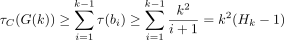
حيث Hk هو الرقم التوافقي k.
دع A تكون الخوارزمية البديلة الموضحة في إثبات النظرية 7. النظر في تسلسل الشبكات G(k). لهذا التسلسل لدينا
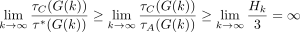
ولذلك،فإنالحلالذيتوفرهخوارزميةالأغلبيةيمكنأنيكونأسوأبشكلتعسفيمنالحلالأمثل. □
4.6 عدم التقريب
وأخيرًا، نوضح أنه في الواقع لا يمكن تقريب المشكلة ضمن نسبة (1 − 𝜖)lnn لأي 𝜖 > 0، ما لم تكن P = NP.
نظرية9. لا يمكن تقريب مشكلة تسلسل الانتشار الجزئي الأمثل ضمن نسبة (1 − 𝜖)lnn لأي 𝜖 > 0، إلا في حالة P = NP.
Proof. من أجل إثبات النظرية، سوف نستخدم النتيجة التي توصل إليها Dinur وSteurer [27] والتي تفيد بأن مشكلة التغطية الدنيا للمجموعات لا يمكن تقريبها ضمن نسبة (1 − 𝜖)lnn لأي 𝜖 > 0، ما لم يكن P = NP.
دع X = (U,S) يكون مثالًا لمشكلة الحد الأدنى لمجموعة الغطاء. لتذكير القارئ، U هو الكون {u1,…,u|U|}،بينما S عبارة عن مجموعة {S1,…,S|S|}منمجموعاتفرعيةمن U. الهدف هنا هو العثور على المجموعة الفرعية S∗⊆ S بحيث يكون اتحاد S∗ يساوي U وحجم S∗ هو الحد الأدنى.
أولاً، سوف نعرض دالة f(X) التي بناءً على مثيل لمشكلة غطاء مجموعة الحد الأدنى X تقوم بإنشاء مثيل لمشكلة تسلسل الانتشار الجزئي الأمثل.
دع الشبكة G(X) يتم تعريفها على النحو التالي (يرد مثال على هذه الشبكة في الشكل 5):
- مجموعة العقد: لكل Si ∈ S، نقوم بإنشاء ثلاث عقد، يُشار إليها بـ Si وqi وq′i. لكل ui ∈ U، نقوم بإنشاء عقد |S|+1، يُشار إليها بـ ui,1,…,ui,|S|+1. بالإضافة إلى ذلك، قمنا بإنشاء عقدة واحدة iS.
- مجموعة الحواف: لكل عقدة Si، نقوم بإنشاء حافة SiiS. لكل عقدة qi، نقوم بإنشاء الحواف qiSi وqiq′i. أخيرًا، لكل عقدة ui,i′ وكل Sj بحيث ui ∈ Sj نقوم بإنشاء حافة ui,i′Sj.
- مصفوفة الوزن: لكل حافة Siqi قمنا بتعيين أوزانها على wSiqi = 0 وwqiSi = α − 1، حيث α = z|S|λ+1 لبعض λ > 0. لكل حافة ui,i′Sj قمنا بتعيين أوزانها على wui,i′Sj = 0 وwSjui,i′ = 1. بالنسبة لجميع أزواج العقد الأخرى المتصلة بحافة، قمنا بتعيين أوزانها على 1.
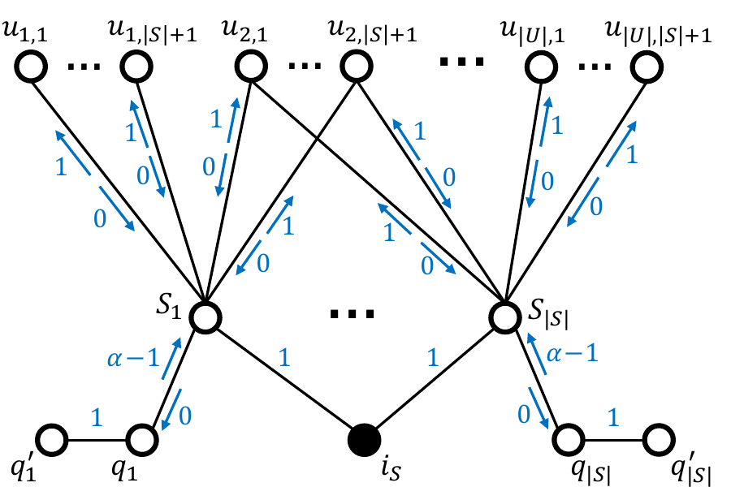
لإكمال المثيل المُنشأ لمشكلة تسلسل الانتشار الجزئي الأمثل، قمنا بتعيين العقدة الأولية لتكون iS وقمنا بتعيين عدد العقد التي سيتم تنشيطها على z = |U|(|S|+1) + 1. ومن ثم، فإن صيغة الدالة f هي f(X) = (G(X),iS,z).
دع γ يكون الحل للمثيل المنشأ لمشكلة تسلسل الانتشار الجزئي الأمثل. إن الدالة g التي تقوم بحساب الحل المقابل للمثيل X لمشكلة غطاء مجموعة الحد الأدنى هي الآن g(X,γ∗) = S ∩ γ∗، أي، S∗ هي مجموعة كل المجموعات Si بحيث تظهر العقد المقابلة لها Si بالتسلسل γ∗.
الآن، سنبين أن g(X,γ∗,r) هو بالفعل الحل الصحيح لـ X، أي، وأنه يغطي الكون بأكمله. لاحظ أنه لا يمكن تنشيط أي من العقد qi أو q′i بينما iS هي العقدة الأولية، نظرًا لأن تأثير Si على qi هو 0. وبالتالي، يمكن أن يتكون التسلسل γ∗ فقط من iS والعقد في S ∪ U. علاوة على ذلك، بما أنه يتعين علينا تنشيط |U|(|S|+1) من العقد S ∪ U، فيجب تنشيط عقدة واحدة على الأقل من كل مجموعة ui,1,…,ui,|S|+1. الطريقة الوحيدة للقيام بذلك هي تنشيط العقدة Sj بحيث تكون ui ∈ Sj. لذلك، لكل ui ∈ U توجد عقدة Sj ∈ γ∗ بحيث يجب أن يكون ui ∈ Sj وg(X,γ) بمثابة غلاف محدد لـ U.
سنقوم الآن بإثبات ثلاث قواعد تتعلق بالوظائف f وg.
لمّة1. حجم الحل للمثيل المحدد لمشكلة التغطية الدنيا للمجموعات التي يتم إرجاعها بواسطة الدالة g أقل أو يساوي الوقت المتوقع لتنشيط الحل المقابل للمثيل المنشأ لمشكلة تسلسل الانتشار الجزئي الأمثل γ مقسومًا على α، أي، |g(X,γ)|≤
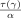
.Proof. دع κ هو عدد العقد Si في التسلسل γ. نظرًا لأن الوقت المتوقع لتنشيط العقدة Si هو دائمًا α، فلدينا τ(γ) ≥ κα. من تعريف g لدينا |g(X,γ)|= κ، وبالتالي لدينا |g(X,γ)|≤. □
لمّة2. بالنسبة للتسلسل γ وحل f(X) والحل المقابل لـ X الذي يتم إرجاعه بواسطة الدالة g لدينا τ(γ) ≤|g(X,γ)|α
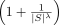
.Proof. دع κ هو عدد العقد Si في التسلسل γ. نظرًا لأن الوقت المتوقع لتنشيط العقدة Si هو دائمًا α والوقت المتوقع لتنشيط العقدة ui,j أصغر أو يساوي |S|،فلدينا τ(γ) ≤ κα + (z −κ− 1)|S|≤ κα + z|S|≤ κα + κz|S|= κα + κ
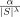
. من تعريف g لدينا |g(X,γ)|= κ، وبالتالي لدينا τ(γ) ≤|g(X,γ)|α. □لمّة3. الحل الأمثل للمثيل الذي تم إنشاؤه لمشكلة تسلسل الانتشار الجزئي الأمثل γ∗ يتوافق مع الحل الأمثل للمثيل المحدد لمشكلة الحد الأدنى لتغطية المجموعات S∗، أي، S∗ = g(X,γ∗).
Proof. كما هو مذكور أعلاه، إذا كان γ هو الحل لـ f(X)، فإن g(X,γ) هو أيضًا الحل الصحيح لـ X، أي، g(X,γ) يغطي الكون بأكمله. بما أن الوقت المتوقع لتنشيط كل عقدة Si هو α، فإن الوقت المتوقع لتنشيط كل عقدة ui,j أصغر أو يساوي |S|،و|S|< α، فإن الحل الأمثل لـ f(X) هو الذي يقلل عدد العقد Si هو γ، وبالتالي، الحل الذي يقلل |g(X,γ)|. □
الآن، افترض أن هناك خوارزمية تقريبية r لمشكلة تسلسل الانتشار الجزئي الأمثل حيث r = (1 − 𝜖)lnn لبعض 𝜖 > 0. دعونا نستخدم هذه الخوارزمية لحل المثيل الذي تم إنشاؤه f(X) والنظر في الحل g(X,γ) للمثيل المحدد لمشكلة الحد الأدنى لتغطية المجموعات.
لدينا بعد ذلك:
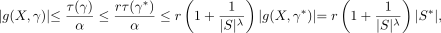
حيث تأتي المتباينة الأولى من اللمّة 1، وتأتي المتباينة الثانية من حقيقة أننا نعتبر خوارزمية تقريب r، وتأتي المتباينة الثالثة من اللمّة 2، وتأتي المساواة النهائية من اللمّة 3. وبالتالي، حصلنا على خوارزمية تقريبية rلمشكلةالحدالأدنىلتغطيةالمجموعات،ونسبةهذهالخوارزميةأقلمن ln(n) بالنسبة للحجم الكبير بدرجة كافية λ. ومع ذلك، كما هو موضح من قبل Dinur وSteurer [27]، فإنه غير ممكن إلا P = NP. ولذلك، لا يمكن أن توجد مثل هذه الخوارزمية التقريبية r لمشكلة تسلسل الانتشار الجزئي الأمثل. بهذا ننتهي من إثبات النظرية 9. □
ننتقل الآن إلى وصف الاستنتاجات والأفكار المحتملة للعمل في المستقبل.
5 الاستنتاجات & العمل المستقبلي
في هذه المقالة ندرس الجوانب الحسابية لمشكلة الانتشار الاستراتيجي التي قدمها Alshamsi وآخرون [1] سابقًا. لقد أظهرنا أن مشكلة الانتشار الجزئي هي NP-كاملة في الحالة العامة، وبالتالي فإن العثور على خوارزمية متعددة الحدود أمر مستحيل، إلا إذا كانت P=NP. نظرًا لهذه الصعوبة، فقد نظرنا في المشكلة من وجهة نظر التعقيد ذات المعلمات وأظهرنا أن المشكلة ثابتة ويمكن حلها عند تحديد معلماتها بواسطة مجموع عرض الشجرة والحد الأقصى للدرجة. على الجانب السلبي، أظهرنا أن خوارزميتين إرشاديتين مقترحتين سابقًا لحل المشكلة، أي، الجشع وحلول الأغلبية، لا يمكن أن يكون لديهما أفضل من ضمان التقريب اللوغاريتمي، حتى في حالة الانتشار الكامل. وأخيرا، أثبتنا أن مشكلة الانتشار الجزئي لا تقبل أفضل من التقريب اللوغاريتمي، إلا إذا كانت P = NP.
أما بالنسبة للأفكار المحتملة للعمل المستقبلي، فإن تحديد مدى تعقيد مشكلة الانتشار الكامل هو سؤال مفتوح مثير للاهتمام. علاوة على ذلك، فإن نتائجنا فيما يتعلق بخوارزميات التقريب سلبية. إن تطوير خوارزمية متعددة الحدود ذات نسبة تقريب صغيرة من شأنه أن يجعل مهمة إيجاد طريقة فعالة لنشر الانتشار الاستراتيجي أسهل بكثير. هناك طريقة أخرى محتملة لتوسيع عملنا وهي إظهار خوارزميات فعالة لإيجاد الحل الأمثل في فئات الشبكات الأكثر تقييدًا، مثلًا، والشبكات ذات عرض الشجرة المحدود أو عرض المسار المحدود (بدون تقييد الدرجة).
يعتمد نموذج الانتشار الاستراتيجي المقدم في هذا العمل على عملية عدوى معقدة، أي، حيث تزيد مصادر التعرض المتعددة للعملية بشكل كبير من احتمالية التنشيط لعقدة معينة. سيكون من الممكن ابتكار نموذج مشابه، ولكن يعتمد على عملية عدوى بسيطة، مثلًا، مستوحاة من النموذج التعاقبي المستقل [9]. وبما أن العدوى البسيطة لا تأخذ في الاعتبار التعرضات المتعددة، فإن العقد التي تم تنشيطها مبكرًا في التسلسل لن تؤثر على احتمالية التنشيط في لحظة معينة. وهذا يمكن أن يؤدي إلى استراتيجيات مثالية تختلف بشكل كبير عن الانتشار الاستراتيجي القائم على العدوى المعقدة.
شكر وتقدير
تم تمويل هذا العمل من خلال الاتفاقية التعاونية بين Masdar Institute of Science and Technology (Masdar Institute), Abu Dhabi, UAE and the Massachusetts Institute of Technology (MIT), Cambridge, MA, USA — المرجع 02/MI/MIT/CP/11/07633/GEN/G/00. تعترف CAH وFLP بالدعم المقدم من اتحادات MIT Media Lab.
References
[1] A. Alshamsi, F. L. Pinheiro, C. A. Hidalgo, Optimal diversification strategies in the networks of related products and of related research areas, Nature communications 9 (1) (2018) 1328.
[2] T. W. Valente, Network models of the diffusion of innovations., Cresskill New Jersey Hampton Press, 1995.
[3] E. M. Rogers, Diffusion of innovations, Simon and Schuster, 2010.
[4] N. T. Bailey, et al., The mathematical theory of infectious diseases and its applications, Charles Griffin & Company Ltd, 5a Crendon Street, High Wycombe, Bucks HP13 6LE., 1975.
[5] R. Pastor-Satorras, A. Vespignani, Epidemic spreading in scale-free networks, Physical review letters 86 (14) (2001) 3200.
[6] S. Aral, C. Nicolaides, Exercise contagion in a global social network, Nature communications 8 (2017) 14753.
[7] V. V. Vasconcelos, S. A. Levin, F. L. Pinheiro, Consensus and polarization in competing complex contagion processes, Journal of the Royal Society Interface 16 (155) (2019) 20190196.
[8] W. O. Kermack, A. G. McKendrick, A contribution to the mathematical theory of epidemics, Proceedings of the royal society of london. Series A, Containing papers of a mathematical and physical character 115 (772) (1927) 700–721.
[9] D. Kempe, J. Kleinberg, É. Tardos, Maximizing the spread of influence through a social network, in: Proceedings of the ninth ACM SIGKDD international conference on Knowledge discovery and data mining, ACM, 2003, pp. 137–146.
[10] J. Goldenberg, B. Libai, E. Muller, Using complex systems analysis to advance marketing theory development: Modeling heterogeneity effects on new product growth through stochastic cellular automata, Academy of Marketing Science Review 2001 (2001) 1.
[11] J. Leskovec, L. A. Adamic, B. A. Huberman, The dynamics of viral marketing, ACM Transactions on the Web (TWEB) 1 (1) (2007) 5.
[12] P. Domingos, M. Richardson, Mining the network value of customers, in: Proceedings of the seventh ACM SIGKDD international conference on Knowledge discovery and data mining, ACM, 2001, pp. 57–66.
[13] C. Kiss, M. Bichler, Identification of influencers—measuring influence in customer networks, Decision Support Systems 46 (1) (2008) 233–253.
[14] F. Morone, H. A. Makse, Influence maximization in complex networks through optimal percolation, Nature 524 (7563) (2015) 65.
[15] A. Goyal, F. Bonchi, L. V. Lakshmanan, A data-based approach to social influence maximization, Proceedings of the VLDB Endowment 5 (1) (2011) 73–84.
[16] W. Chen, Y. Wang, S. Yang, Efficient influence maximization in social networks, in: Proceedings of the 15th ACM SIGKDD international conference on Knowledge discovery and data mining, ACM, 2009, pp. 199–208.
[17] O. Hinz, B. Skiera, C. Barrot, J. U. Becker, Seeding strategies for viral marketing: An empirical comparison, Journal of Marketing 75 (6) (2011) 55–71.
[18] B. Libai, E. Muller, R. Peres, Decomposing the value of word-of-mouth seeding programs: Acceleration versus expansion, Journal of marketing research 50 (2) (2013) 161–176.
[19] G. Tong, W. Wu, S. Tang, D.-Z. Du, Adaptive influence maximization in dynamic social networks, IEEE/ACM Transactions on Networking (TON) 25 (1) (2017) 112–125.
[20] L. Seeman, Y. Singer, Adaptive seeding in social networks, in: 2013 IEEE 54th Annual Symposium on Foundations of Computer Science, IEEE, 2013, pp. 459–468.
[21] T. Horel, Y. Singer, Scalable methods for adaptively seeding a social network, in: Proceedings of the 24th International Conference on World Wide Web, International World Wide Web Conferences Steering Committee, 2015, pp. 441–451.
[22] J. Jankowski, P. Bródka, P. Kazienko, B. K. Szymanski, R. Michalski, T. Kajdanowicz, Balancing speed and coverage by sequential seeding in complex networks, Scientific reports 7 (1) (2017) 891.
[23] J. Jankowski, M. Waniek, A. Alshamsi, P. Bródka, R. Michalski, Strategic distribution of seeds to support diffusion in complex networks, PloS one 13 (10) (2018) e0205130.
[24] C. A. Hidalgo, B. Klinger, A.-L. Barabási, R. Hausmann, The product space conditions the development of nations, Science 317 (5837) (2007) 482–487.
[25] M. R. Guevara, D. Hartmann, M. Aristarán, M. Mendoza, C. A. Hidalgo, The research space: using career paths to predict the evolution of the research output of individuals, institutions, and nations, Scientometrics 109 (3) (2016) 1695–1709.
[26] F. L. Pinheiro, A. Alshamsi, D. Hartmann, R. Boschma, C. Hidalgo, Shooting low or high: Do countries benefit from entering unrelated activities?, arXiv preprint arXiv:1801.05352 (2018).
[27] I. Dinur, D. Steurer, Analytical approach to parallel repetition, in: Proceedings of the forty-sixth annual ACM symposium on Theory of computing, ACM, 2014, pp. 624–633.
[28] R. M. Karp, Reducibility among combinatorial problems, in: Complexity of computer computations, Springer, 1972, pp. 85–103.
[29] R. Bellman, et al., The theory of dynamic programming, Bulletin of the American Mathematical Society 60 (6) (1954) 503–515.
[30] D. P. Bertsekas, Dynamic programming and optimal control, Vol. 1, Athena scientific Belmont, MA, 1995.
[31] D. P. Bertsekas, J. N. Tsitsiklis, Neuro-dynamic programming, Vol. 5, Athena Scientific Belmont, MA, 1996.
[32] J. Rust, Dynamic programming, The New Palgrave Dictionary of Economics (2016) 1–26.
[33] R. E. Bellman, S. E. Dreyfus, Applied dynamic programming, Vol. 2050, Princeton university press, 2015.
[34] H. L. Bodlaender, Dynamic programming on graphs with bounded treewidth, in: Automata, Languages and Programming, Proceedings of the 15th International Colloquium, ICALP88, Tampere, Finland, July 11-15, 1988, 1988, pp. 105–118.
[35] L. P. Kaelbling, M. L. Littman, A. W. Moore, Reinforcement learning: A survey, Journal of artificial intelligence research 4 (1996) 237–285.
[36] N. Robertson, P. Seymour, Graph minors. iii. planar tree-width, Journal of Combinatorial Theory, Series B 36 (1) (1984) 49 – 64.
[37] R. R. G. Downey, M. Fellows, Parameterized Complexity, Monographs in Computer Science,
Springer Verlag, 1999.
URL https://books.google.co.jp/books?id=pt5QAAAAMAAJ